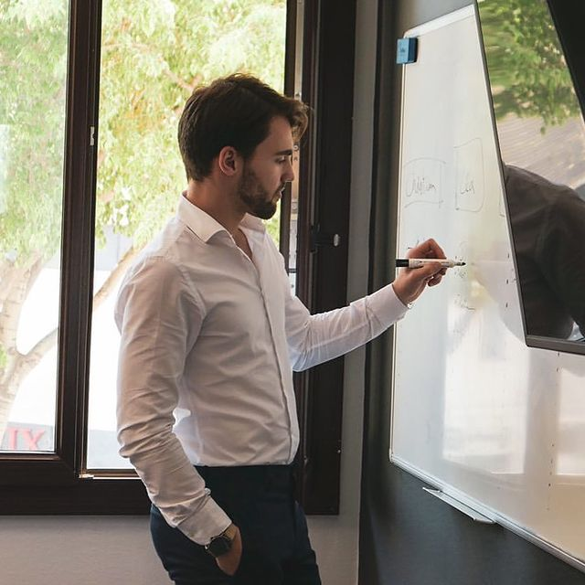

Hello, I'm Joachim de Knoop 😄
I love entrepreneurship, the sports industry and personal development. I'm currently working on launching my own business to bring innovative solutions to athletes and clubs around the world.
Experience
As a brand ambassador at Geninc from January 2020 to September 2022, I excelled in a high-pressure environment where my pursuit of excellence and high performance was not just necessary but thrived. My role encompassed recruiting, coaching, and managing teams, where leadership and people management skills were honed. This experience has provided me with a solid foundation in sales, marketing, and team leadership. In my role at Intersport where I'm currently working since January 2023, I engaged with the dynamic world of retail, gaining invaluable insights into consumer behavior and the factors driving the sports retail market. This experience solidified my understanding of retail management, including inventory control, sales optimization, and customer engagement strategies.
Education
I earned my business degree from Aix-Marseille University and studied for my A-Levels in England. Now, I'm at Kedge Business School in Marseille, studying International Sport and Event Management, which is one of France's top business schools. It's a great place to learn how to run global sports events
Skills
Team Leadership: Demonstrated ability to lead and motivate teams, fostering an environment of collaboration and high performance. Strategic Planning: Skilled in developing and implementing effective strategies to achieve business and event objectives. Communication: Excellent communication skills, capable of engaging with diverse stakeholders, from team members to international clients. Analytical Thinking: Strong analytical abilities, enabling insightful decision-making based on comprehensive market and performance data. Problem-Solving: Adept at identifying challenges and innovating practical solutions in fast-paced environments. Digital Marketing: Knowledgeable in digital marketing strategies to enhance event visibility, participant engagement, and brand awareness.